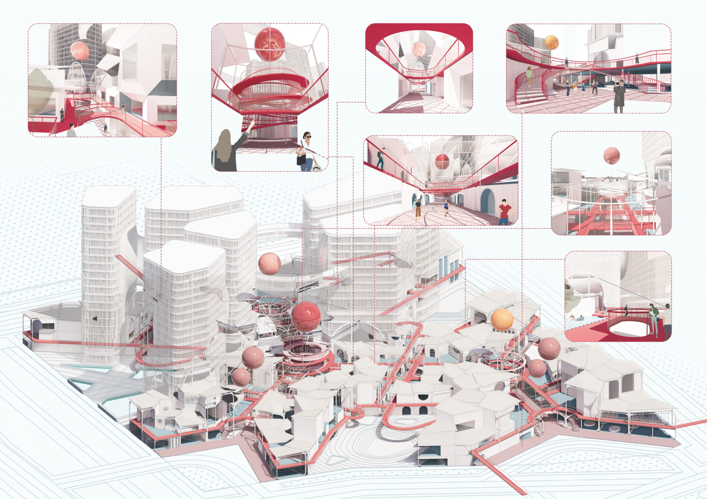
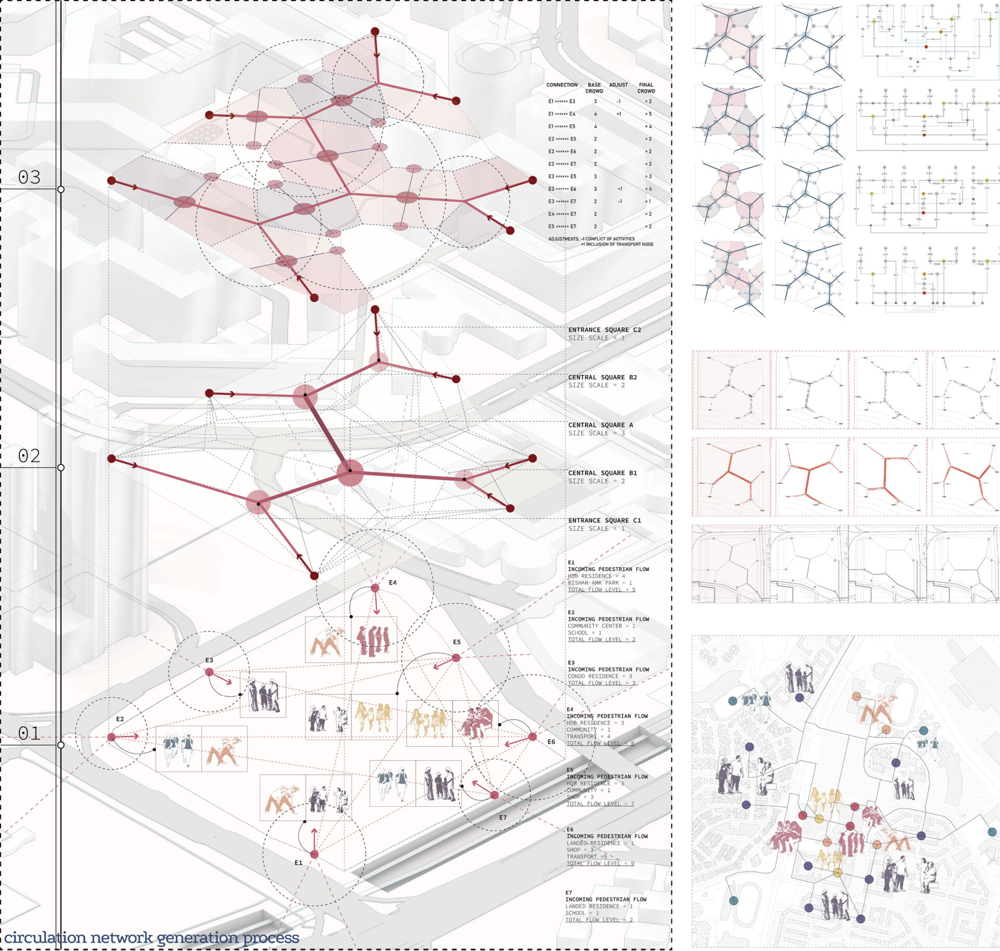
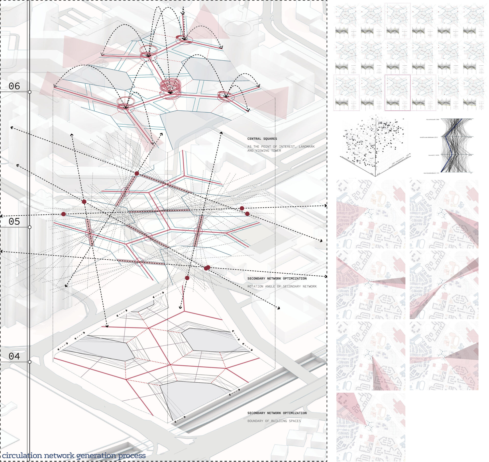
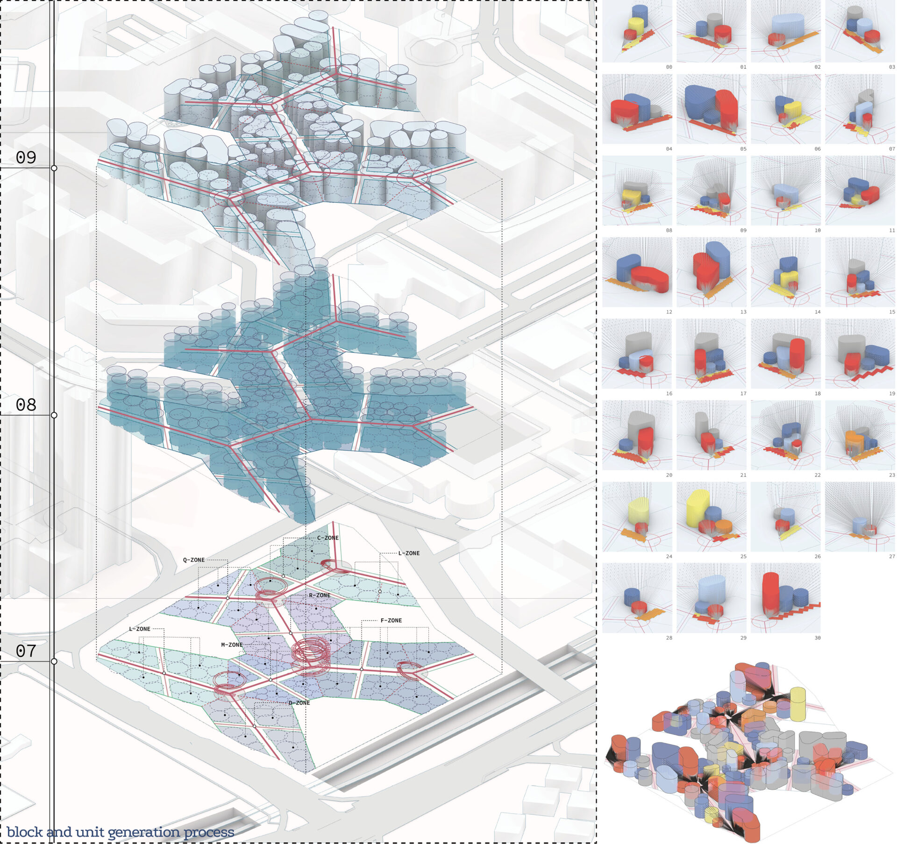
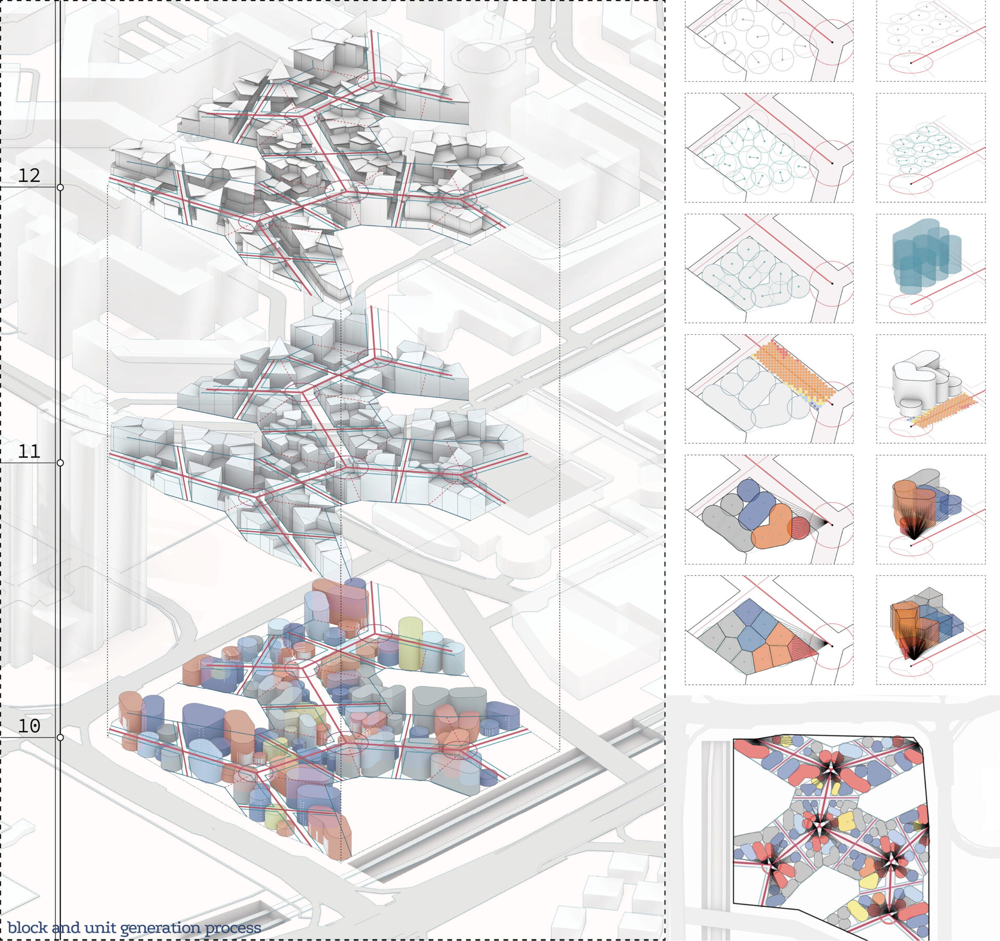
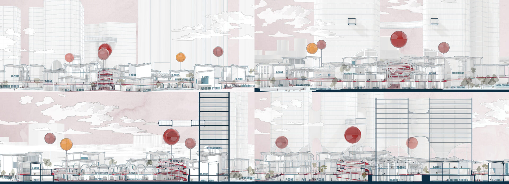
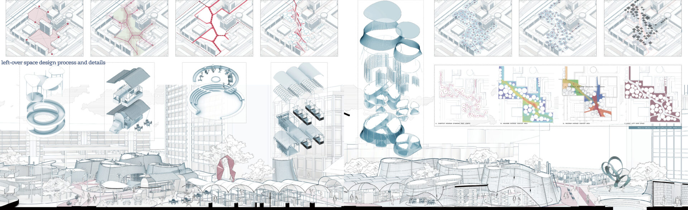
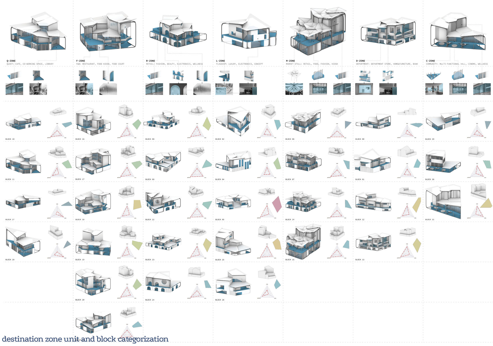
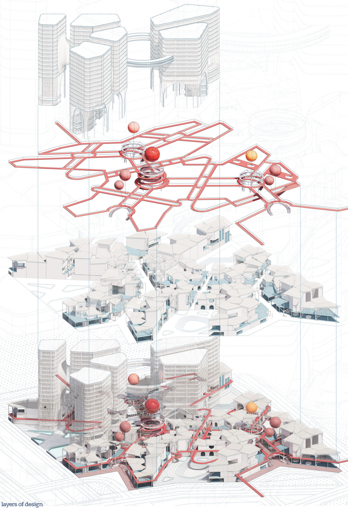

UNStudio collaboration
Architectural cognition in practice
Integrating cognitive and behavioural research into architectural design practice. Includes the Architectural Cognition Cards Workshop at UNStudio, Amsterdam, in 2023.
Human-centred architectural design, computational workflows and practice collaborations.
Architectural cognition in practice
Integrating cognitive and behavioural research into architectural design practice. Includes the Architectural Cognition Cards Workshop at UNStudio, Amsterdam, in 2023.
Architectural cognition in practice
Collaboration with WOHA, Singapore, as part of the PhD research on translating architectural cognition into design practice.
National University of Singapore · M.Arch · 2020–2021
A computational design workflow in Grasshopper integrating multi-objective optimisation, spatial network and visibility analyses, with a focus on wayfinding, spatial legibility and experience.








